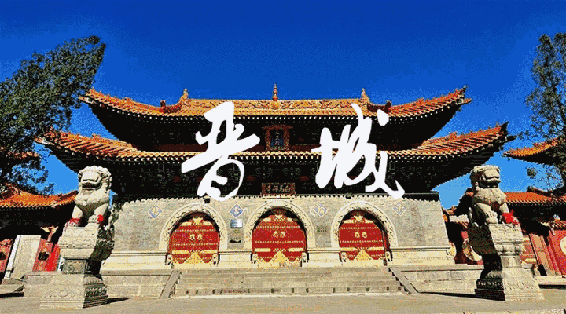
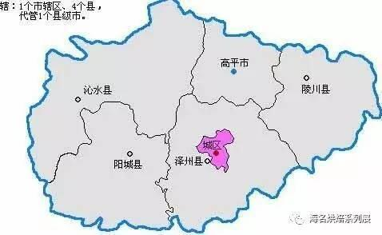
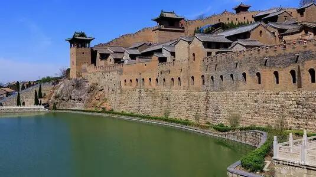
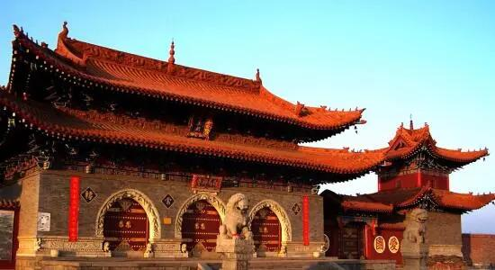

晋城历史----
在晋城市区范围内，最能体现晋城文化特色的是晋城老城。不论是程颢书院，还是景德桥、景忠桥、张院民居、玉皇庙，
这些都是晋城老城的组成部分。晋城老城始建于唐武德初年（公元618年），有着上千年的建城史。历史上有无数名人踏
上了这片土地：唐代大诗人陈子昂登上泽州城北楼，写下了《登泽州城北楼宴》。明代开国皇帝朱元璋的孙子隰川王和宣
宁王迁于此，建有隰川王府和宣宁王府。于谦在这里写下了《到泽州》。近代，朱德、冯玉祥、赵树理等人都在这里留下
了自己的足迹。可以说，晋城老城是晋城文化的集中体现，是重要的承载晋城文脉的历史遗存
自古以来，这里物华天宝，人杰地灵，相传女娲氏、神农氏、九黎部落首领蚩尤及尧、舜、禹等都曾在这里活动过。四大名胜
"珏山吐月"、"白马
拖缰"、"松林积雪"、"孔子回车"等历史古迹和古老传说在这里辉煌。女娲补天（传说中华人文始祖女娲氏炼石补天遗址和栖息地
——娲皇窟，在晋城市郊水东乡丹河北岸浮山北谷）、神农播种（中华第一大帝神农氏采五谷尝百草的羊头山和古墓冢在高平市境内）
、禹凿石门（晋城市阳城境内有石门）、愚公移山等历史传说都有实地可指。古书《墨子》中曾有“舜耕于历山”（今晋城市沁水境内
有历山舜王坪），“渔于获泽”（今阳城东有获泽河）的记载。
晋城骏景花园
还有以沁水下川、陵川塔水河、西瑶泉为代表的原始文化，以高都、沁水八里坪为代表的新石器文化。公元前260年，历史上著名
的“长平之战”就发生在晋城高平市一带。后周世宗显德元年（954年） 后周世宗大胜北汉军于巴公原（今晋城市郊北），更是留下
著名的巴公原遗迹。
晋城矿产资源丰富，有"煤铁之乡"之美称。始于商周、盛于春秋的冶炼业，在长达数千年的发展中日精月进。春秋战国的“阳阿古剑”
就产自晋城。北宋，晋城境内的“大广冶”为冶铁官炉，所铸“大观通宝”被誉为史上最美铁母(钱)。明清时期，境内熟铁炉数有百余座，
晋城被誉为“九州针都”，“大德”牌钢针畅销海内外，“泰山义”剪刀名扬天下，日用铁货、“九头十八匠”更是名扬全国。时至今日，在当
地以“头”字作地名的仍有50多个，以“匠”字作地名近30个。
仰历史文明之光，这里曾哺育和造就了一大批历史名人，如唐代著名佛经注疏家高僧慧远，宋代文学家刘羲叟，首创诸宫调的艺术家孔三
传，明代经济学家王国光，诗书大家张慎言，清代文渊阁大学士、《康熙字典》总编纂陈廷敬，数学家张敦仁，当代著名作家赵树理等，
他们为中华民族的繁荣昌盛做出了不可磨灭的贡献。

——晋城地图——
“我也不知道是个啥形状~~”

自然资源----
晋城古称泽州府，位于山西省东南部，丹河、沁河流域中下游，晋城全市总面积9490平方公里，东西宽160公里，南北长100公里，地理坐标为北纬
35度11'-36度04'，东经111°55'-113°7'，市区面积149.6平方公里。晋城全境四面环山，西依中条山与临汾、运城衔接，北依丹朱岭、羊头山
等山脉与长治接壤。东、南依太行、王屋二山与河南省新乡、济源、焦作交界。晋城控扼晋豫咽喉，俯视千里中原，历来是兵家必争之地，发挥着承
东启西、沟通南北的重要作用，战国军事家吴起称之为“夏桀之国，左天门之阴，右天溪之阳，卢泽在其北，伊洛出其南，有此险也”。可见晋城地理
位置的重要。
晋城市全境位于晋城盆地之中，即丹河、沁河中下游流域的盆地。全市平面轮廓略呈卵形，整个地区的地势呈北高，中、南部低的簸箕状。境内平原、丘陵、
山地分别占全市总面积的12.9%、28.5%、58.6%。其中平原1221.6平方公里，丘陵2704平方公里，山地5564.4平方公里。晋城市全境平均海拔600至700米，
最高点为海拔2322米的中条山舜王坪，最低处是丹河、沁河下游河谷地，海拔接近300米。
气候
晋城市属暖温带半湿润大陆性季风气候区，受大陆性季风影响，四季分明，一般为：春季温暖多风，夏季炎热多雨，秋季秋高气爽，冬季寒冷干燥。属“长日照
地区”，年日照时数在2393~2630小时之间，平均为2563小时。年平均气温10.2~12℃，夏季七月平均气温27℃，极端最高气温38℃（1966年）。年平均降水量
626-750毫米，降水量主要分布在夏季，占全年降水量的56.4%，年最大降水量为1010.4毫米。年降水日数为90-98天。全市气候温和，最佳旅游季节为4-10月，
早午晚温差变化微小。晋城市可分为温寒作物区，温凉作物区，温和作物区，温暖作物区，多年无霜期为197天，最多为226天，最少为138天。
自然资源
晋城市素以丰富的自然资源而著称。地上地下，宝藏遍布。在东西长160公里，南北宽100公里的地下，蕴藏着煤、煤层气、铁矿石、
铝土矿、铜、锰、锌、金、银、大理石、水晶石、白云石等数十种矿产资源，尤以煤铁为著，有"煤铁之乡"的盛誉。
野生动植物资源可观。晋城市素有"生物资源宝库"之美称。阳城蟒河和沁水历山建立了两个自然保护区。全市境内两栖爬行类27种，鸟类175种，
兽类48种。大鲵、菜花蛇、西藏蟾蜍、角蟾、隆肛蛙、猕猴、毛足燕、晴灰鹃等，均为市级特有动物。属国家珍稀保护动物的有黑鹳、猕猴、麝、金钱豹
、大鲵、鸳鸯、白尾海雕、金雕、大壁虎等。
全市野生植物资源约有560余种，药用植物200余种，鞣科植物50余种，油脂植物70余种，芳香类植物40余种，淀粉糖类植物60余种，经济类植物30余种，
野生观赏植物60余种，国家重点保护植物有连香树、山白树、杜仲、银杏、翅果油树、领春木、青檀、野大豆、核桃楸、猬实。还有蜜源植物、土农药植物、色素植物，优良草种以及猴头、木耳、蘑菇等菌类微生物。
晋城森林资源可观。晋城市属温暖带半湿润地区，林业资源丰富，有森林面积380.5万亩，森林覆盖率达到33.6%。以天然次生林为主，占全市森林面积的70.2%。
树种以栎类（包括栓皮栎、脱齿槲栎、子栎和辽东栎等）为主，面积占天然林的55%；其次是油松、侧柏、白皮松、华山松、山杨、白桦等。历山舜王坪一带保留着
山西省仅存的一块面积为730多公顷的原始森林。
水资源相对丰富。晋城市是华北地区相对的富水区。主要水系为黄河流域的沁河、丹河两大流域，和海河流域的卫河支流，降水、河川径流和地下水都比较丰富，
水资源总量为21.49亿立方米，人均占有量1144立方米，高出全省和周围各省区平均水平，全市建有任庄、董封、申庄、上郊、杜河、张峰等6座蓄水一亿立方米的大型
水库，和105座中小型水库，总库存量15亿立方米。
——晋城风光——


——“晋”食——


| call me: | 波波 |
|---|
| 地址：山西晋城666 | 邮编：005521 |
|---|
| 晋城百度百科： | <------点我点我 |
|---|